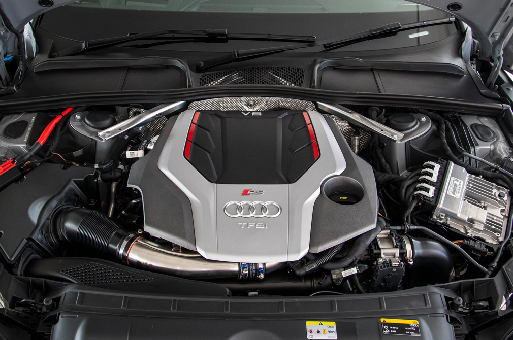

The 2022 Audi RS5 synthesizes thrilling acceleration and effortlessly sharp handling into a stormer that somehow manages also be docile and elegant.
With a 444-hp twin-turbo V-6 and an aggressive appearance, the 2022 Audi RS5 coupe provides max performance and machismo over its more subdued counterparts, the two-door A5 and S5. The RS5's extra power and track-focused hardware come with a significantly higher price tag, which helps it compete with hi-po rivals such as the BMW M4 and the Mercedes-AMG C63 coupe. While the Audi isn't as powerful as those alternatives, or as enjoyable behind the wheel, it has thrilling acceleration and works better as a beastly daily driver. Its interior has excellent outward visibility and generous passenger space, not to mention an undeniable sense of luxury with its rich materials and massaging front seats. The 2022 RS5 coupe could be considered too comfortable and quiet for some, but it gives off badass vibes regardless.

Under the RS5's sinewy clamshell hood sits a twin-turbo 2.9-liter V-6 that pumps out 444 horsepower and 443 pound-feet of torque. The power routes through Audi's rear-biased Quattro all-wheel-drive system via a smooth-shifting eight-speed automatic transmission. Floor the gas pedal to feel the coupe's rousing acceleration.
The real beauty is how supremely comfortable the RS5 rides over distances short or long. While rivals such as the M4 and the C63 coupe demand more attention during spirited sessions, the Audi is still involving and intoxicating.
The RS5's interior mixes an array of rich materials and high-tech equipment. The standard front sport seats are supportive during cornering and comfy on road trips. They also feature massage functions to indulge the driver and front passenger. Every cabin includes ambient interior lighting, three-zone climate control, and a panoramic sunroof. Those who want an even fancier experience can choose the optional diamond stitching, fully digital gauge cluster, heated steering wheel, and head-up display. Its fantastic driving position and excellent visibility—for a coupe, at least—are complemented by a back seat that will accommodate two adults of average height. While the coupe isn't as capacious as the four-door RS5 Sportback that sports a rear hatchback, the regular RS5 still swallowed five of our carry-on suitcases inside its trunk.
VEHICLE TYPE
front-engine, all-wheel-drive, 4-passenger, 2-door coupe or 5-passenger, 4-door hatchback
BASE PRICE
Coupe: $93,595
Sportback: $93,895
ENGINE
twin-turbocharged and intercooled DOHC 24-valve V-6, aluminum block and heads, direct fuel injection
POWER
444 hp @ 6700 rpm
TORQUE
443 lb-ft @ 1900 rpm
TRANSMISSION
8-speed automatic
PERFORMANCE (C/D EST)
60 mph: 3.4-3.9 sec
100 mph: 8.8-8.9 sec
1/4-Mile: 11.9 sec
Top Speed: 180 mph
EPA FUEL ECONOMY (C/D EST)
Combined/City/Highway: 21/18/25-26 mpg